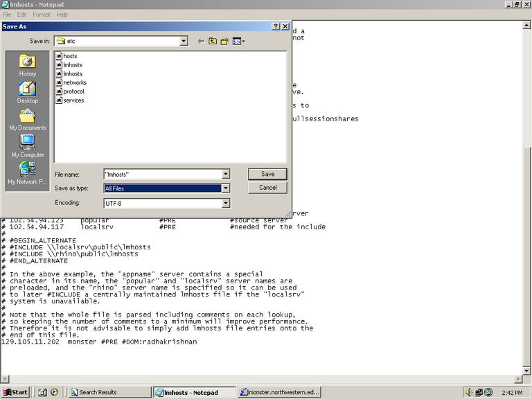
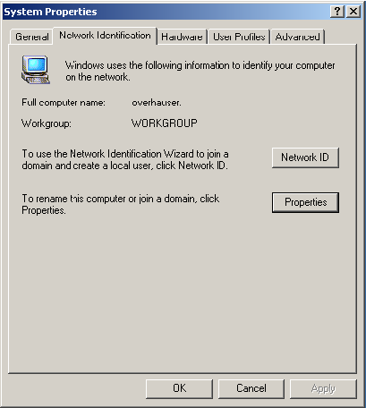
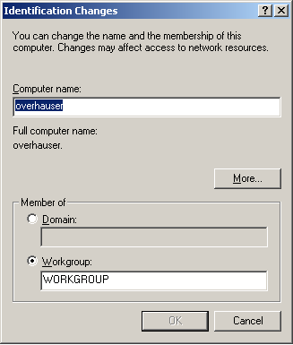
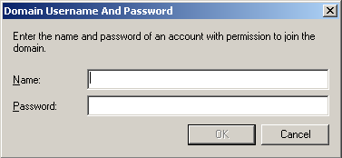

Samba set-up and instructions
Description:
Samba is designed to emulate windows networking using the SMB protocol (hence the name).
It is NOT for connecting *nix clients. To do this please refer to the NFS/NIS page here
The Samba configuration file is found on monster at /etc/smb.conf:
- The manual page for the configuration file can be found here.
- The guide I used to help me create this configuration file is
here.
- The most comprehensive list of 'HowTos' is
here.
Adding computers Part I: configure computer
- Configure the computer in the 'TCP/IP' settings of the network card
- Gateway: 129.105.38.1
- 1o DNS: 129.105.49.1
- 2o DNS: 165.124.49.21
- WINS: 129.105.16.69 (can now be set to 129.105.11.202 (monster))
Any typos will cause errors, please double check all numbers
Adding computers Part II: register on monster
- First off the computer has to be entered into the smbpasswd system on monster.
- Do:
- Please note, when adding the machine name with the smbpasswd command, DO NOT ENTER '$' like for passwd
Part IIa: Deleting users and machines
Occasionally, there is a need to delete and recreate accounts (e.g. when the IP address changes), in which case this is accomplished as follows:
Register machine as described in part II.
Adding computers Part III: join domain
Then the computer can be joined to the 'radhakrishnan' domain:
- The most painful part is actually editing the lmhosts file, this is found in C:\WINNT\SYSTEM32\DRIVERS\ETC.
- Add only one line: "129.105.11.202 monster #PRE #DOM:radhakrishnan"
- Save with quotes, choose the 'All Files' type and 'UTF-8' Encoding (see picture)

- Click on 'My Computer->Properties->Network Identification'

- Click on 'Properties', click on 'Domain' and type 'RADHAKRISHNAN' then press OK.

- A pop-up box appears and you should now login as root (first time only for joining the domain)
